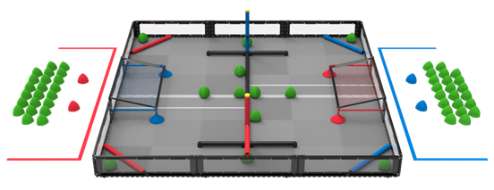
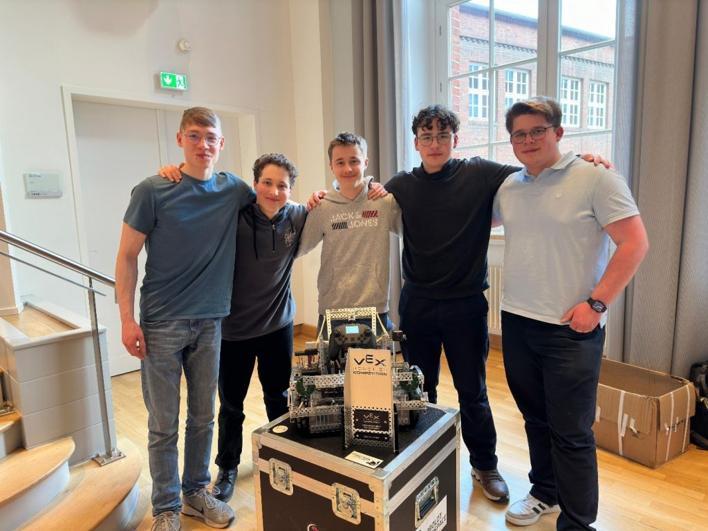

Einleitung
Die Teilnahme des Teams des Humboldt Makerspaces am German Masters in Robotik in Hamburg war ein großer Erfolg. Trotz der durch den DB-Streik erschwerten Anreise stellte sich das Team aus Maximilian Marschner, Nico Menge, Anes Rebahi, Karl Steinbach und Erik Tunsch (Jahrgang 12) der Herausforderung des VEX-V5-Wettbewerbs „Over Under“ und bewies dabei sowohl technisches Können als auch starken Teamgeist.
In einem anspruchsvollen Teilnehmerfeld setzte sich das Team gemeinsam mit seiner Allianz vom Heinitz-Gymnasium Rüdersdorf durch und sicherte sich den ersten Platz des Turniers. Dank einer hohen Schussgeschwindigkeit, einer nahezu perfekten Trefferquote und einer gezielten Analyse der gegnerischen Strategien konnten die Roboter entscheidende Vorteile ausspielen. Auch im Skills-Wettbewerb überzeugte das Team mit einer Kombination aus präziser Programmierung und geschickter Steuerung und erreichte den dritten Platz.

Das Spielfeld für "Over Under"

Teamfote mit dem Roboter und dem Pokal
Neben dem sportlichen Erfolg blieb auch Zeit, Hamburg zu erkunden und Sehenswürdigkeiten wie den Elbtunnel und die St.-Michaelis-Kirche zu besichtigen. Die Teilnahme am Wettbewerb war für das Team eine wertvolle Erfahrung, die den Zusammenhalt stärkte und zeigte, wie viel durch Zusammenarbeit erreicht werden kann. Ein besonderer Dank gilt dem Sponsor scalehub, der die Anmeldegebühren übernommen und damit die Teilnahme ermöglicht hat.
von Erik
Eindrücke
Aus dem Alltag des Makerspaces
📷 Beschreibung Bild 1
📷 Beschreibung Bild 2
📷 Beschreibung Bild 3